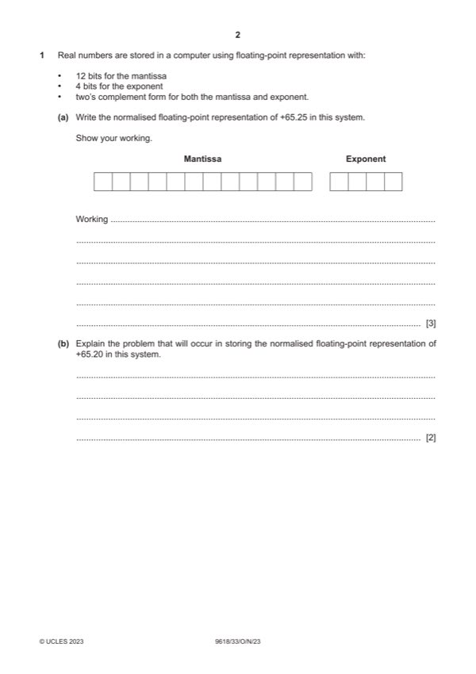
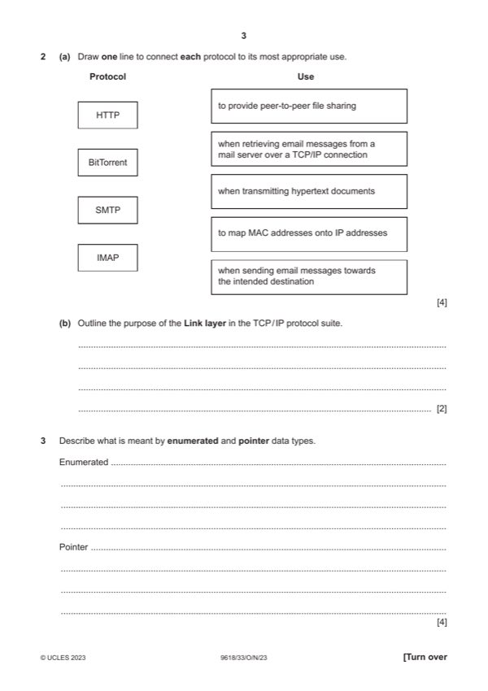
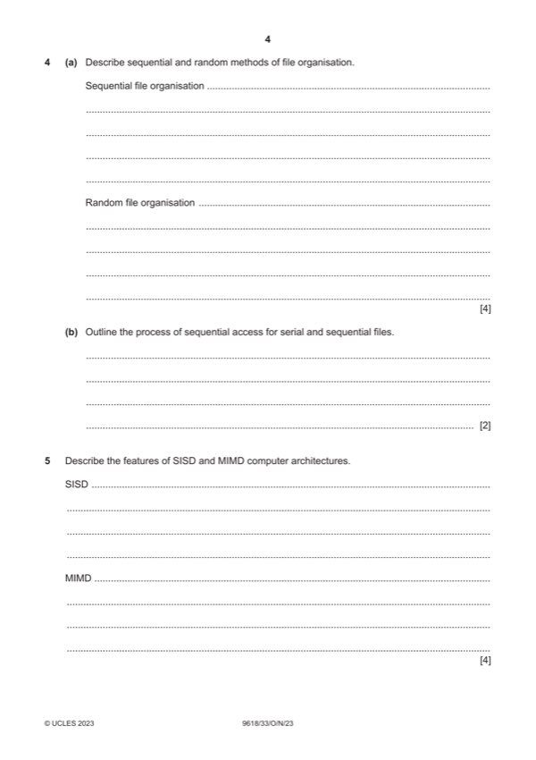
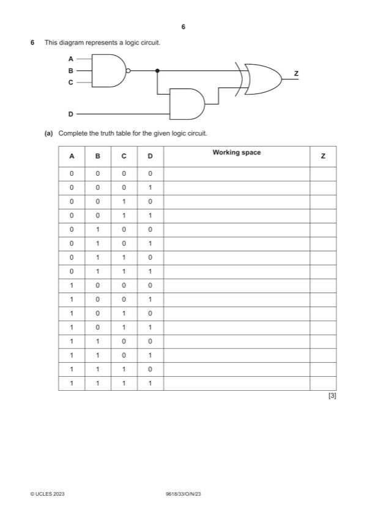
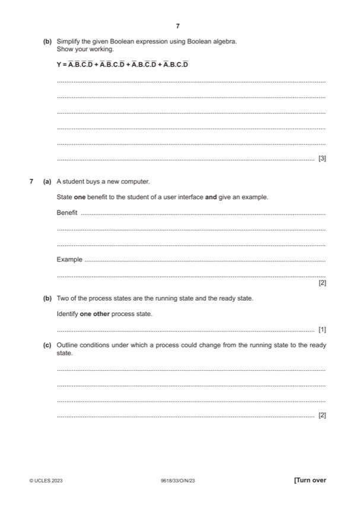
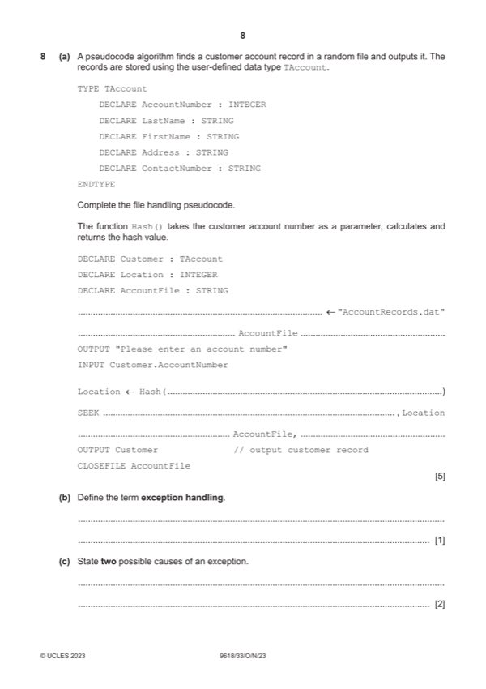
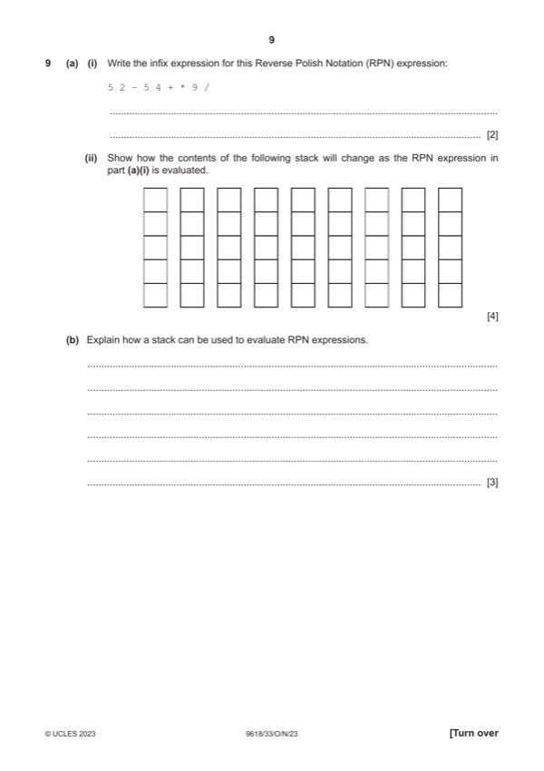
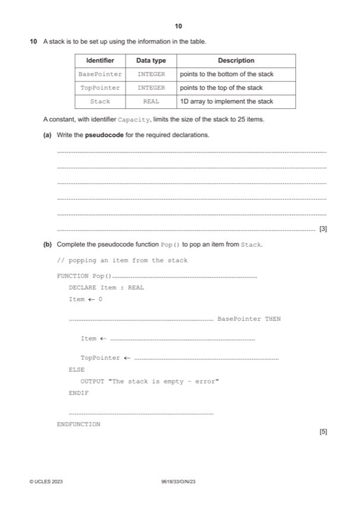
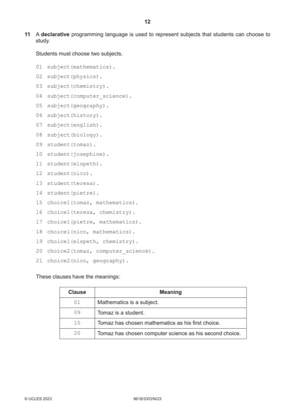
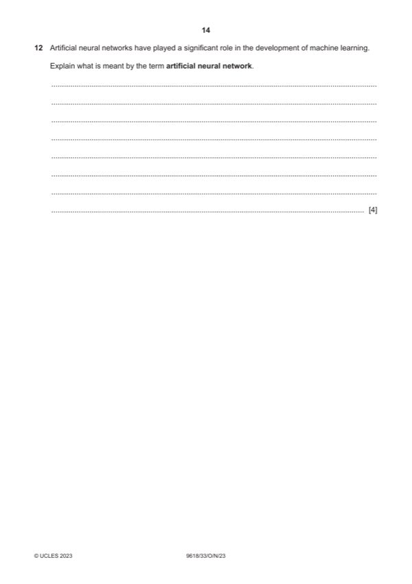

Question 0
Part 0 — solution
1 0 0 0 0 0 1 0 1 0 0 0 1 1 1
Mark points
- Include the ideas shown in the solution above.
Step-by-step solutions based on the mark scheme (not a mark-scheme dump).
Part 0 — solution

Part 1(a) — solution
Part 1(b) — solution

Part 2(a) — solution
Part 2(b) — solution
Part 3 — solution
Part 3 — solution

Part 4(a) — solution
Part 4(b) — solution
Part 4 — solution
Part 5 — solution
Part 5 — solution
Answer: OR
Part 5 — solution

Part 6(a) — solution
Part 6(b) — solution

Part 7(a) — solution
Part 7(b) — solution
Part 7(c) — solution

Part 8(a) — solution
Part 8(b) — solution
Part 8(c) — solution

Part 9(a)(i) — solution
Part 9(a)(ii) — solution

Part 10(a) — solution
Part 10(b) — solution
Part 10(c) — solution

Part 11(a) — solution
Part 11(c) — solution

Part 12 — solution
Part 64 — solution